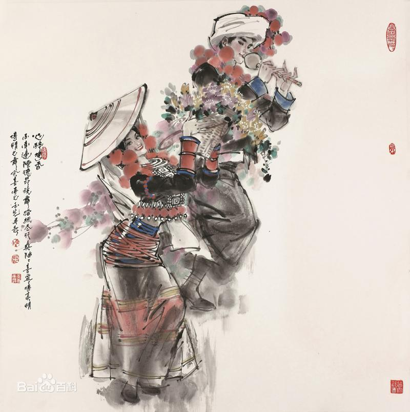

- 民族简介
- 文化习俗
- 历史发展
- 旅游介绍
德昂族
德昂族，也称“崩龙族”，是中缅交界地区的山地少数民族，民族语言属于南亚语系孟高棉语族佤德昂语支，分为“布雷”、“汝买”、“若进”三种方言，没有本民族的文字，因长期与傣、汉、景颇等民族相处，许多人通傣语、汉语和景颇语。 德昂族主要居住中华人民共和国与缅甸联邦共和国交界地区，是一个典型的大分散小聚居的民族，分布范围非常广，中国一侧在主要分布在云南省德宏、保山、临沧等3个地州9个县市，缅甸一侧在掸邦、克钦邦等地。 根据2010年第六次全国人口普查统计，德昂族总人口数为20556人 。
族称
德昂族由于居住分散 ，自称他称很多。 居住在德宏地区的德昂族自称“德昂”，镇康、耿马的德昂族则自称“尼昂”或“纳昂”，此外，还有“崩龙”、“昂”、“冷”、“梁”、“布雷”、“纳安诺买”等称呼。 根据德昂族妇女的裙子上所织线条的不同色调特征，当地汉族人民分别称他们为“红崩龙”、“花崩龙”、“黑崩龙”等。 新中国成立后进行民族识别，沿用了“崩龙”这个名称。后根据本民族的意愿，1985年9月经国务院批准，“崩龙族”正式改名为“德昂族” 。
信仰
德昂族是全民信仰佛教的民族。德宏州 以及临沧市的德昂族信仰的是严格的山地小乘佛教教派，禁止杀害或伤害一切有生命的东西。在这一点上，与当地傣族信仰的可杀牲的小乘佛教教派有别，虽然其教义是共同的。德昂人崇拜天堂、憎恶地狱。他们认为好人死后可入天堂，还可再转化为人；坏人死后，则入地狱，受尽煎熬。因此，在德昂人生活的地方社会安定，民族和平，勤劳勤俭，蔚然成风。 德昂族笃信佛教，寨中最好的一幢建筑物是供着佛像的奘房。多数村寨都有自己的佛寺和佛爷以及小和尚（入寺为僧的儿童）。佛爷都识傣文，诵傣文经书。他们的生活，除宗教节日群众布施外，平日由全寨人家轮流供食。各地德昂族信奉不同的教派，有的可以喂猪养鸡或杀牲，有的则严禁杀牲，甚至野兽严重危害庄稼也不许打猎；每逢宗教节日和忌日都不从事生产 [2] 。
建筑
德昂族的建筑以竹楼著称。长期以来，竹楼是各地德昂族共同的住宅形式。在镇康地区是由若干小家庭同住一幢房子，房屋中间有宽敞的走道，两边为各家庭的住室，间壁而居，各有火塘。这样的竹楼较大，有的占地400多平方米，不过大竹楼已为各家各户的小竹楼所代替。 德昂族的竹楼多依山而建，坐西向东。主要有正方形和长方形两种形式，具有对称、和谐、严谨、庄严的美学特征。比较典型而普遍的是以德宏地区为代表的一户一院式的正方形竹楼。这种竹楼分主楼和附房两部分。主楼呈正方形，楼上住人，楼下圈养牲畜。附房多建在主楼的一侧，用作堆放柴草及安置舂米的脚碓。这种竹楼外形别致，美观大方，据说很像古代中原地区儒生的巾帽。关于它的来源，德昂族民间还流传着这样一个动人故事：诸葛亮当年率兵南征，来到德昂山寨，有一天突遭袭击，受伤遇险，幸得勇敢善良的德昂姑娘阿诺相救，才得以化险为夷，转危为安。在短暂的接触中，二人产生了感情。当重任在肩的诸葛亮不得不辞别心上人的时候，便将自己的帽子留给阿诺作为信物。痴情的阿诺苦盼18年，等来的却是心上人的死讯。从此心碎肠断的阿诺不吃不睡，每天呆立村头，望着心上人东去的路。到第33天，突然雷电交加，大雨倾盆。雨过天晴之后，阿诺不见了。而她站立的地方却出现了同诸葛亮的帽子一模一样的房子，这就是德昂人后来居住的竹楼 [2] 。
服饰
历史
德昂族源于古代的濮人，与“哀牢”有密切的关系。清代以前，有关记载把云南境内南亚语系的德昂、布朗、佤等民族统称为“濮人”、“蒲”或“蒲蛮”。“濮人”早在公元前2世纪就居住在怒江两岸，早于阿昌、景颇等族进入这一地区，是开发保山、德宏一带较早的民族。隋唐时称为“茫蛮”、“扑子蛮”、“望苴子蛮”，他们先后臣服于汉、晋王朝及南诏、大理国，德昂族先民还在宋朝后期建立起自己的区域统治，即“金齿国”。元以后成为傣族土司的属民。“濮人”汉代属永昌郡（今云南保山市），唐宋至元明时期，德昂族先民“茫施蛮”活动于澜沧江两岸。元代在今潞西地区设“茫施路军民总管府”，封阿利（传说是德昂族的头人）为土官。元代中期，“白夷”（傣族先民）迅速强盛起来，德昂族被迫逐渐向山区迁移。明代，中央政府封傣族刀姓为茫施（今芒市）长官司长官，傣族土司又封德昂族头人为“老”，以代表土司管辖德昂族人民，于是德昂族先民成了傣族土司的属民。
近代以来，德昂族与景颇族等各族人民，曾共同抗击英帝国主义对我云南西部地区领土的侵略。抗日战争时期，日本侵略军从缅甸侵入我国德宏地区，当时沦陷区的德昂族人民参加了汉、傣等各族人民组织的一支二千余人的游击队，用铜炮枪、长刀及弩弓，同日本侵略军进行了多次斗争。抗战胜利后，德昂族人民为反抗国民党军队的镇压，各村组织了自卫队，经常伏击敌人，迫使他们不敢任意进村。新中国成立前夕，德昂族人民积极协助中国人民解放军，围歼向云南西部逃窜的国民党军队，迎来了德昂族地区的解放。
1956年，根据德昂族人口少、居住分散、各地社会经济发展不 平衡的情况，采取了不同的方针，对德昂族地区进行民主改革。保山、临沧地区及德宏州坝区的德昂族，因过去直接隶属于傣族土司，其政治经济结构与傣族相同，因此和傣族一样，实行和平协商的方式进行了土地改革。和平协商土地改革的主要任务是取消封建领主、地主所有制，把田地分给德昂族农民，使他们成为土地的真正主人。不久在这些地区又实现了农业合作化。德宏州半山区和畹町镇的德昂族，受傣族土司和景颇族山官的统治；同时这一地区荒地可以自由开垦，土地并不缺乏，因而改革和景颇族地区一样，实行向社会主义直接过渡的方针，即在党的领导下，认真依靠贫苦农民，团结一切劳动人民，团结和改造一切与群众有联系的民族头人，在国家大力扶持下，通过互助合作，大力发展生产，以及加强与生产有关的经济文化工作，逐步消灭阶级和原始落后因素，逐步过渡到社会主义 。
德昂族旅游胜地——盈江
大盈江，发源于腾冲县，一支源于古永狼牙山，一支源于双海和芹菜塘。大盈江上游称胆扎河，中游称槟榔江，在盈江县旧城区下拉线汇合后叫大盈江，过虎跳石后从南奔江口出国境，流入缅甸伊洛瓦底江，最后流入孟加拉湾。大盈江长204.5公里，盈江县境内长145.5公里。
大盈江流域属南亚热带季风气候，气候温和，土地肥沃，特产富饶，还蕴藏着丰富的矿产资源、药材资源和野生动物资源，具有很高的开发价值。从盈江下拉线汇合后，河床平缓，波平浪静，最宽处达1000余米。两岸青山如黛，翠竹欲滴，景色秀丽迷人。
盈江县地处云南省西部，德宏州西北部，是一个山川秀美、资源丰富，区位独特，开发潜力巨大、后发优势突出的边疆少数民族口岸县。其东北面与腾冲县接壤，东南面与梁河县接壤，南面与陇川县接壤，西面、西北、西南面与缅甸为界。县城小平原海拔826米，距州府芒市153千米，距省会昆明735千米，距缅甸密支那197千米，距缅甸八莫131千米。
特殊的地理环境和独特的气候特征孕育了大盈江两岸神奇美丽的自然景观，有国家级风景游名胜区大盈江风光，有独树成林的奇观“亚洲榕树王”，有“小千岛湖”之称的人工高山湖凯邦亚湖等著名景区景点。盈江是少数民族特有剧种“傣剧”的发源地，有独一无二的支那傣族“光邦”舞，有展现傣族文化独特风韵的允燕佛塔，傣族、景颇族、傈僳族风土人情、饮食文化，风光同民俗相互凝合，自然与人文和谐统一，成为了盈江旅游资源的重要看点。此外，境外迷人的异国情调和自然风光也具有无穷的吸引力。